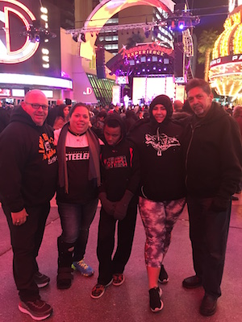

Skills
Some of the skills that I have is freestyling, doing quick math, and playing baseball. I was in a freestyling match in huntington beach with about 200 people, and I got to the top 10. I was 8 years old in this, and I was in the finals against a 20 year old. I was the best kid in math in my 2nd grade class, and I was doing multiplication in the beginning of the year. I still play baseball today and i am extremely good at it. I was invited to play on a 12 and under travel ball team when I was turning 10.
Hobbies and Interests
Some of my hobbies are playing sports such as football, baseball, and basketball. I also like playing video games and watching television with my cat. I like to go to church and describe to people who jesus christ is and why he died on the cross for our sins.Some of my interests are english bulldogs(insert link to cute photo) because I want one so bad. Another one of my interests are watching baseball games with my family because you only get so much time to hang out with them.
Family
I have 4 siblings but only 2 with the same parents. I have two sister and two brothers. I have a grandfather, grandmother, aunt, uncle, and two cousins. I have about 25 other family members, but I do not know them as much as I know the people I listed.I love all of my family with all of my heart because family is everything. They will help me when I am feeling down, and they will keep me positive when I am. Any way that I decide to go, they will be right there with me, giving me the best advice.
